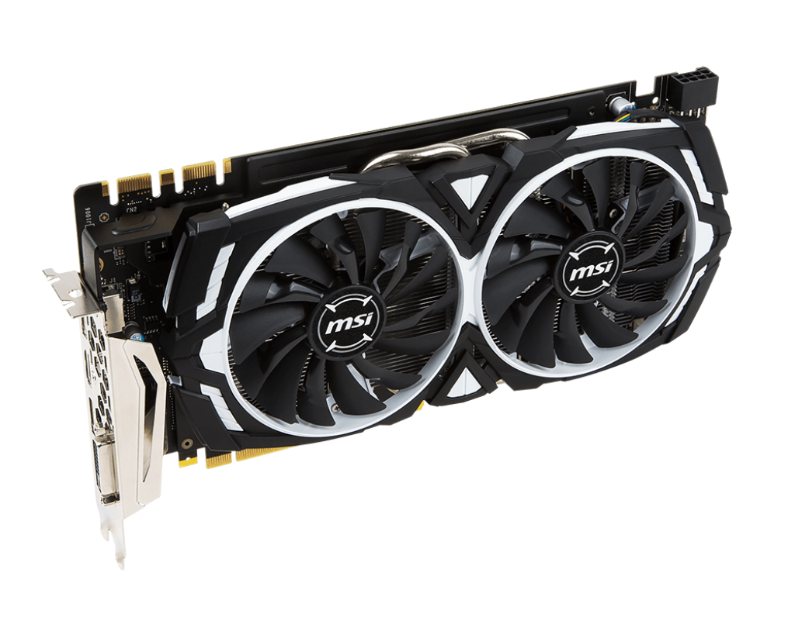

A video card is a piece of computer hardware that's rectangular in shape with numerous contacts on the bottom of the card and one or more ports on the side for connection to video displays and other devices. A video card is a piece of computer hardware that's rectangular in shape with numerous contacts on the bottom of the card and one or more ports on the side for connection to video displays and other devices.
The video card installs in an expansion slot on the motherboard. While most video cards are of the PCIe format, they come in other formats as well, including PCI and AGP. These additional formats are older standards and don't communicate with the CPU and other components as quickly as PCIe.
In a desktop, since the motherboard, case, and expansion cards are designed with compatibility in mind, the side of the video card fits just outside the back of the case when installed, making its ports (e.g., HDMI, DVI, or VGA) available for use.
Some video cards have only one port for connection to a standard monitor or projector while more advanced ones may have ports for connections to multiple output sources including additional monitors and televisions. Still other cards may have inputs for video editing and other advanced tasks.
Laptops, tablets, and even smartphones, all have video cards, albeit smaller and most often non-replaceable.
Each motherboard supports only a limited range of video card formats, so be sure to always check with your motherboard manufacturer before making a purchase.
Many modern computers don't have video expansion cards but instead have on-board video-GPUs integrated directly onto the motherboard. This allows for a less expensive computer but also for a less powerful graphics system. This option is wise for the average business and home user not interested in advanced graphics capabilities or the latest games.
Most motherboards with on-board video allow BIOS to disable the chip in order to make use of a video card installed to an expansion slot. Using a dedicated video card may improve overall system performance because it includes its own RAM, power regulators, and cooling so that the system RAM and CPU can be used for other things.